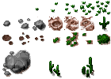
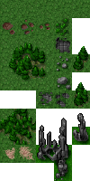
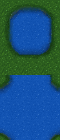
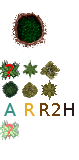
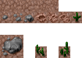
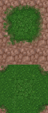
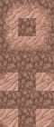
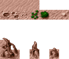
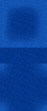
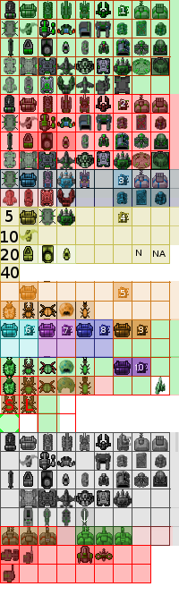

这不是截图，是 Rusted Warfare 1.15 的原始字节码在浏览器里跑出来的结果：
材质与贴图经游戏自己的 gameFramework/m/h（Canvas 后端）绘制，底层是
本项目手写的 Web Canvas2D 实现。
检测项：android.graphics 绘制 · m/h 适配器 · 图像链路 · GLES20→WebGL · 真实关卡三层叠加









